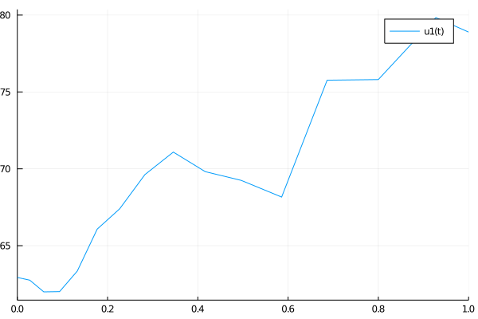

Tutorial 2: Coefficients (in place)


In this tutorial, you will learn:
- How to declare in-place coefficients for dynamical systems.
Introduction
In the previous tutorial we have learned how to declare system dynamics as well as model dynamics individually. Next, we constructed a dynamical system by using a collection of dynamics but without considering coefficients. Now we would like to focus in the construction of the coefficients that will allows us to define a dynamical system that can be solved by applying a discretization scheme.
First we must realize that there are two types of coefficients: in-place (IIP) and out-of-place (OOP). An in-place function for a coefficient modifies an array in place by receiving its pointer as argument. An out-of-place function for a coefficient returns statically sized arrays. Depending on the size of the problem, one approach is better than the other. In this tutorial we will focus in the in-place case. Checkout the next tutorial for the out-of-place case.
Setup
The first step is to load the pertinent libraries for the tutorial:
using UniversalDynamics
using UnPack
using PlotsIn place coefficients
Consider a stock $S$ following the Black-Scholes-Merton model (BSM). Under the risk-neutral measure $Q$, the stock process follows:
\[dS(t) = r \cdot S(t) \cdot dt + σ \cdot S(t) \cdot dW^Q(t) \quad S(0) = S₀,\]
with risk-free interest rate $r$ and volatility $σ$. Let's define this dynamics using what we already know from the previous tutorial:
S0 = rand(1)
S = SystemDynamics(S0)1-dimensional system dynamics with 1-dimensional DiagonalNoise
state: [0.00629341]
in-place? true
dimension: 1
noise dimension: 1
diagonal noise? trueThe IIP drift f! and diffusion g! coefficients are given by:
function f!(du, u, p, t)
# unpack risk-free rate parameter
@unpack r = p
# modify du in-place using current stock state S(t) = u[1]
du[1] = r * u[1]
return nothing
end
function g!(du, u, p, t)
# unpack volatility parameter
@unpack σ = p
# modify du in-place using current stock state S(t) = u[1]
du[1] = σ * u[1]
return nothing
end;
nothing #hideNow we are ready to declare a dynamical system with coefficients, dynamics and parameters:
dynamics = [:S => S]
params = (r = 0.05, σ = 0.1)
ds = DynamicalSystem(f!, g!, dynamics, params)1-dimensional dynamical system with 1-dimensional DiagonalNoise
state: [0.00629341]
in-place? true
dimension: 1
noise dimension: 1
diagonal noise? trueWe can now apply a numerical scheme to solve the SDE. For example, the fixed time step, strong order 0.5 for all kind of noises, Euler-Maruyama scheme:
sol = solve(ds, 1.; alg=UniversalDynamics.EM(), seed=1, dt=0.01)
plot(sol)Or an adaptive time step, strong order 1.5 and weak order 2.0 for diagonal and scalar noise:
sol = solve(ds, 1.; alg=UniversalDynamics.SRIW1(), seed=1)
plot(sol)
Let's spice up the example and consider stochastic interest rates given by a Multi-Factor Affine Short Rate model. This will allow us to use some additional features that comes in handy for building the coefficients.
The Multi-Factor Short Rate model that we will refer to is decribed in [1] as $AM₁(3)$ in its $Ar$ representation and its given by a System of SDEs described in the documentation. Our library allows us to describe such complex model fairly easy, requiring only the definition of some constants and functions.
Start by loading some parameters values for the Short Rate Model:
# load some parameters
include("assets/DaiSingletonParameters_A3_1.jl")
(υ₀, θ₀, r₀, μ, ν, κ_rυ, κ, ῡ, θ̄, η, σ_θυ, σ_θr, σ_rυ, σ_rθ, ζ, α_r, β_θ) = DaiSingletonParameters()(0.008389999999999998, 1.069970971985938, 2.082652261993877, 0.366, 0.228, 0.0348, 18.0, 0.0158, 0.0827, 0.09159694318043589, 0.0212, -0.0886, 4.2, -3.77, 0.014422205101855956, 3.26e-14, 7.9e-10)Define all Short Rate model parameters, taking into account IIP parameter functions:
x0 = [υ₀, θ₀, r₀]
ξ₀!(t) = zero(t)
function ξ₁!(u, t)
u[1] = 0
u[2] = 0
u[3] = 1
return nothing
end
function ϰ!(u, t)
u[1,1] = μ
u[2,2] = ν
u[3,1] = κ_rυ
u[3,2] = -κ
u[3,3] = κ
return nothing
end
function θ!(u, t)
u[1] = ῡ
u[2] = θ̄
u[3] = θ̄
return nothing
end
function Σ!(u, t)
u[1,1] = η
u[2,1] = η * σ_θυ
u[2,2] = 1
u[2,3] = σ_θr
u[3,1] = η * σ_rυ
u[3,2] = σ_rθ
u[3,3] = 1
return nothing
end
function α!(u, t)
u[1] = 0
u[2] = ζ^2
u[3] = α_r
return nothing
end
function β!(u, t)
u[1,1] = 1
u[2,1] = β_θ
u[3,1] = 1
return nothing
end
x = MultiFactorAffineModelDynamics(x0, ϰ!, θ!, Σ!, α!, β!, ξ₀!, ξ₁!; noise=NonDiagonalNoise(3))3-dimensional Multi-Factor Affine Short Rate model dynamics
state: [0.00839, 1.06997, 2.08265]
in-place? true
dimension: 3
noise dimension: 3
diagonal noise? falseWe will also solve the Money Market Account $B(t)$ differential equation for the short model with the integrator, so we have to define its dynamics:
B = SystemDynamics(ones(eltype(x), 1))1-dimensional system dynamics with 1-dimensional DiagonalNoise
state: [1.0]
in-place? true
dimension: 1
noise dimension: 1
diagonal noise? trueAs always, before declaring the dynamical system, define a dynamics container:
dynamics = [:S => S, :x => x, :B => B]3-element Array{Pair{Symbol,UniversalDynamics.AbstractDynamics{true,Dim,NoiseDim,DiagNoise,Float64} where DiagNoise where NoiseDim where Dim},1}:
:S => 1-dimensional system dynamics with 1-dimensional DiagonalNoise
state: [0.00629341]
in-place? true
dimension: 1
noise dimension: 1
diagonal noise? true
:x => 3-dimensional Multi-Factor Affine Short Rate model dynamics
state: [0.00839, 1.06997, 2.08265]
in-place? true
dimension: 3
noise dimension: 3
diagonal noise? false
:B => 1-dimensional system dynamics with 1-dimensional DiagonalNoise
state: [1.0]
in-place? true
dimension: 1
noise dimension: 1
diagonal noise? trueNow, let's construct the IIP drift f! and diffusion g! coefficients for this new scenario.
function f!(du, u, p, t)
@unpack _dynamics, _securities_ = p
@unpack _x = _dynamics
@unpack _S_, _x_, _B_ = _securities_
S = remake(_S_, du, u, t)
x = remake(_x_, du, u, t)
B = remake(_B_, du, u, t)
IR = FixedIncomeSecurities(_x, x, B)
S.dx[] = IR.r(t) * S(t)
drift!(x.dx, x(t), get_parameters(_x), t)
B.dx[] = IR.r(t) * IR.B(t)
return nothing
end
function g!(du, u, p, t)
@unpack _dynamics, _securities_ = p
@unpack _x = _dynamics
@unpack _S_, _x_, _B_ = _securities_
@unpack σ = p
S = remake(_S_, du, u, t)
x = remake(_x_, du, u, t)
B = remake(_B_, du, u, t)
S.dx[] = σ * S(t)
diffusion!(x.dx, x(t), get_parameters(_x), t)
B.dx[] = zero(eltype(u))
return nothing
end;
nothing #hideThere are many things that are worth to be explained for the coefficients functions:
_dynamicsis a special variable containing all the dynamics,_securities_is a special variable containing one security for each dynamics (why securities are useful will become clearer later),- dynamics names are preceded by an underscore for each dynamics,
- securities names are preceded and followed by an underscore for each dynamics,
FixedIncomeSecuritiesconstructs all the basic fixed income securities for the pertinent interest rate model, for example the discount factor, zero coupon bond, simple forward rate, spot or Libor rate, etc.
Consider building the diffusion coefficient function without using securities:
function g_tedious!(du, u, p, t)
@unpack _dynamics = p
@unpack _x = _dynamics
@unpack σ = p
S = view(u, 1:1)
x = view(u, 2:4)
B = view(u, 5:5)
dS = view(du, 1:1, 1:1)
dx = view(du, 2:4, 2:4)
dB = view(du, 5:5, 5:5)
dS[] = σ * S[]
diffusion!(dx, x, get_parameters(_x), t)
dB[] = zero(eltype(u))
return nothing
end;
nothing #hideHaving securities + remake allows us to avoid thinking about indexes and views.
We can now proceed with the numerical solution:
ds = DynamicalSystem(f!, g!, dynamics, params)5-dimensional dynamical system with 5-dimensional NonDiagonalNoise
state: [0.00629341, 0.00839, 1.06997, 2.08265, 1.0]
in-place? true
dimension: 5
noise dimension: 5
diagonal noise? falsesol = solve(ds, 1.; alg=UniversalDynamics.EM(), seed=1, dt=0.01);
plot(sol, vars=1, label="S(t)")plot(sol, vars=2:4, label=["x₁(t)" "x₂(t)" "x₃(t)"])plot(sol, vars=5, label="B(t)")
A final useful tip or remark is that declaring a dynamical system without coefficients allows to check the noise_rate_prototype attribute, which helps undestanding what we must build in the diffusion coefficient:
ds = DynamicalSystem(dynamics)5-dimensional dynamical system with 5-dimensional NonDiagonalNoise
state: [0.00629341, 0.00839, 1.06997, 2.08265, 1.0]
in-place? true
dimension: 5
noise dimension: 5
diagonal noise? falseget_noise_rate_prototype(ds)5×5 Array{Float64,2}:
1.0 0.0 0.0 0.0 0.0
0.0 1.0 1.0 1.0 0.0
0.0 1.0 1.0 1.0 0.0
0.0 1.0 1.0 1.0 0.0
0.0 0.0 0.0 0.0 1.0[1] Dai, Q. and Singleton, K.J. (2000), Specification Analysis of Affine Term Structure Models.
This page was generated using Literate.jl.